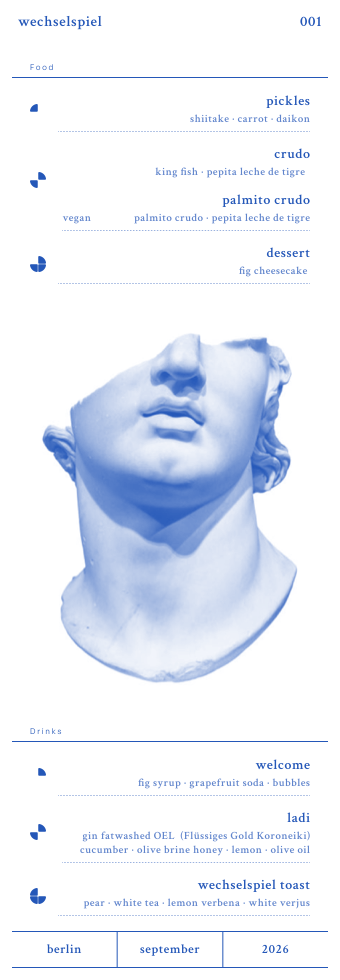
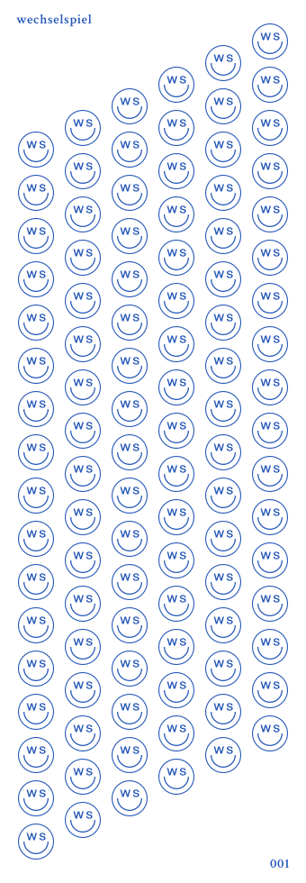
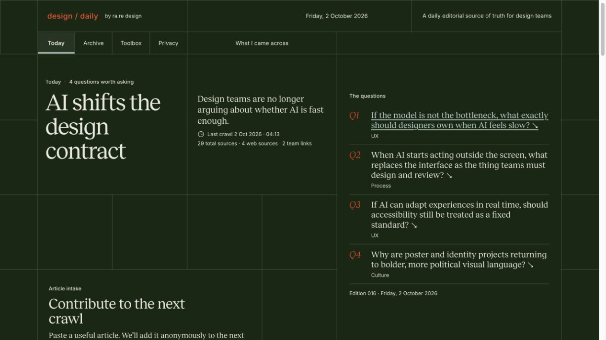
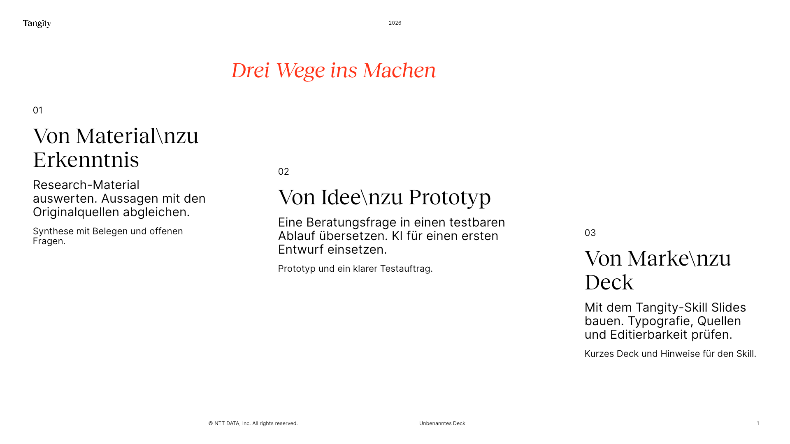
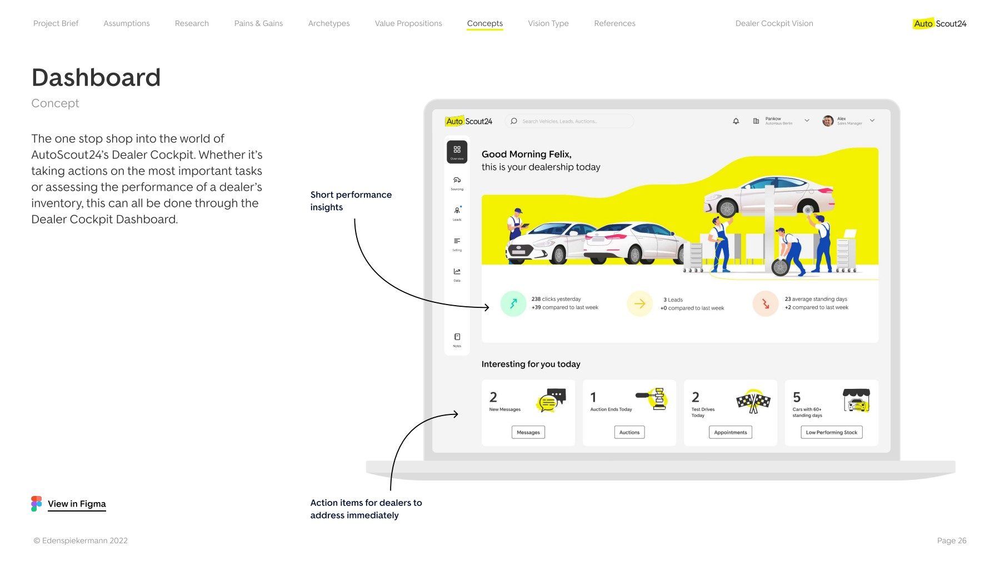
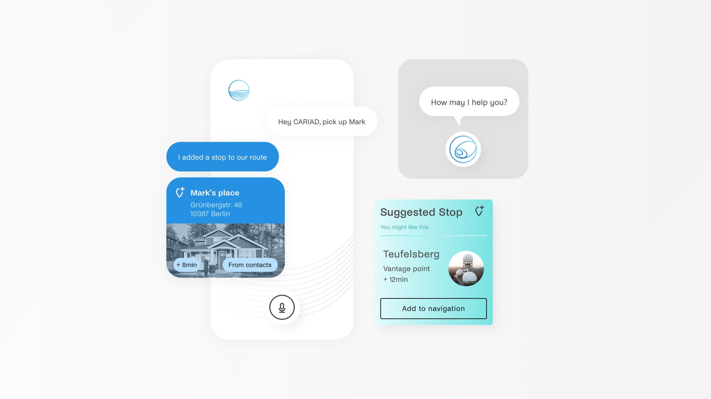
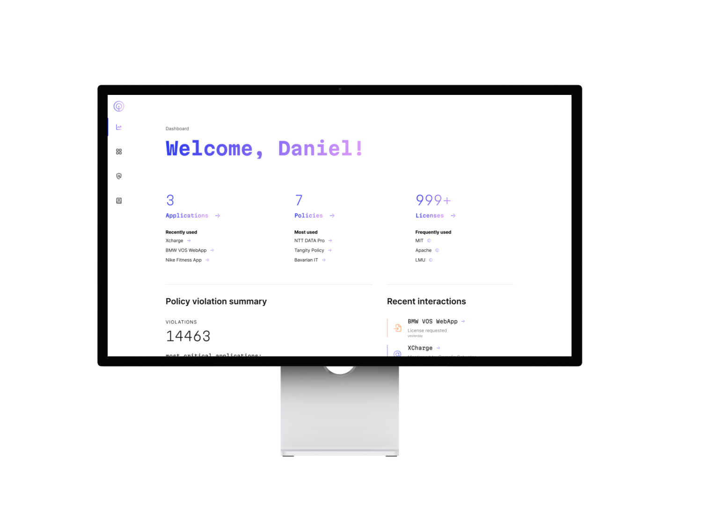
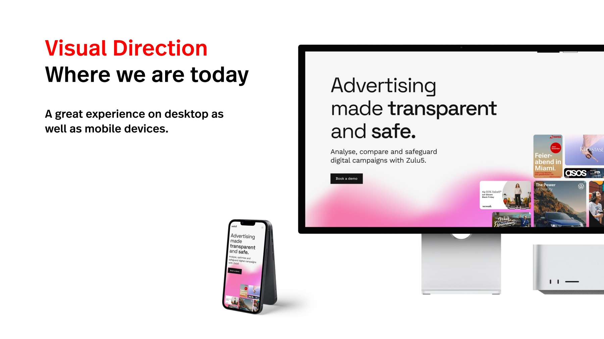
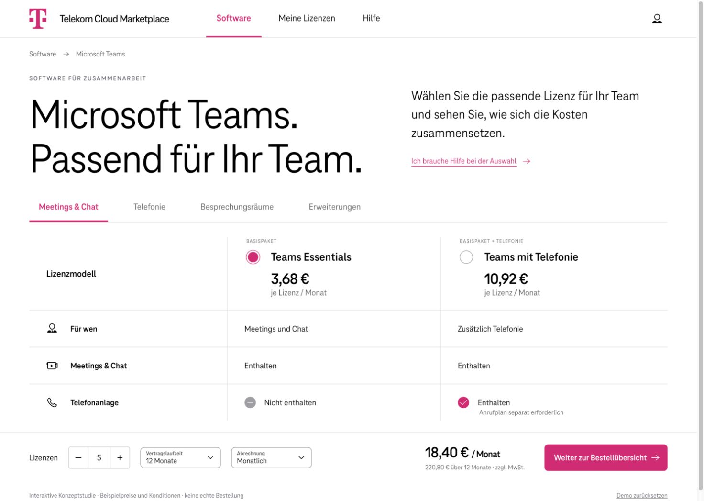
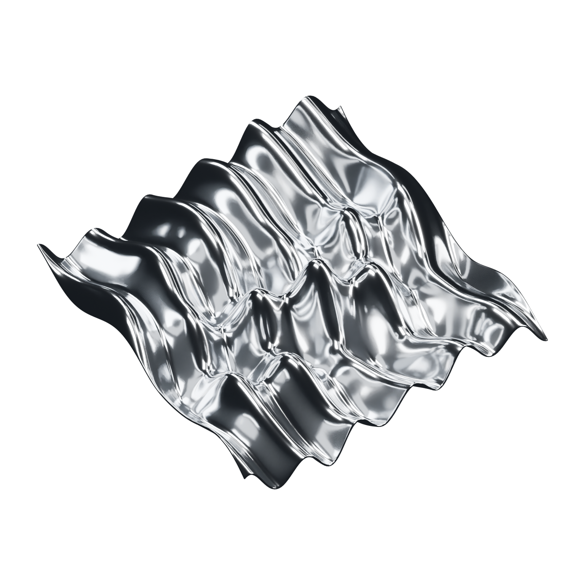

ra.re
About me
My name is Rapha and I’m a design manager at Tangity. I’ve led digital product work at Volkswagen Digital:Lab and design teams at Edenspiekermann.
Swiss-born, Berlin-based.
I make complex products tangible.
I lead teams through messy product problems and turn what we learn into digital experiences people can use with confidence.
I like giving ideas a shape early. A sketch gets the feedback loop going, and putting ideas in front of people helps me see what holds up. I stay curious, play with type and motion, and leave room for the odd idea that turns out to be the good one.
I’m always happy to chat.
Reach out and say hello.
selected work
-


Wechselspiel · Visual identity
Wordmark, type and colour studies explored through social graphics and a beta menu.
-

design / daily · An independent design journal
A design journal that turns signals from design and AI into sourced editorial questions and a curated toolbox.
-

Tangity Deck Studio · Making presentation standards usable
An editable presentation workflow that brings Tangity’s layout standards into the editor and carries them through to PowerPoint.
-
comdirect · Simplifying identity verification
A design sprint that turned a complex identity verification journey into a prototype stakeholders could review and validate.
-
comdirect · Application and onboarding
Explored how to simplify micro and standard onboarding in the comdirect app, including the transition from desktop to mobile.
-
comdirect · Hilfe & Service
Combined UX and SEO research to develop a clearer route to answers and support.
-

AutoScout24 · Future dealership tools
Early research and product vision for tools that could fit the daily work of car dealerships.
-

CARIAD · Futures Report 2025+
An automotive futures study that translated emerging trends into scenarios, experience principles and interface concepts.
-

Licensight · Identity and product presentation
A visual project spanning a wordmark, logo variants and product interface imagery.
-

Zulu5 · Digital brand refresh
A landing page and visual language refresh that made Zulu5’s advertising intelligence and brand safety tools easier to understand.
-

Deutsche Telekom · Cloud Marketplace concept study
Investigated where a B2B software marketplace could improve and built a prototype to make those opportunities tangible for discussion.
-
TeamBank · Stakeholder engagement microsites
Two microsites helped Tangity prepare for its first conversation with TeamBank after cold outreach and explore where the teams might work together.
-

Jogo Bonito · EP artwork
A modular cover language built from a seven-band grid, liquid forms and shifts in colour.